مسلم بن الحجاج بن مسلم القشيري النيسابوري
Author
About the author
الإمَام مُسْلِم (٢٠٤ - ٢٦١ هـ = ٨٢٠ - ٨٧٥ م)
مسلم بن الحجاج بن مسلم القشيري النيسابورىّ، أبو الحسين
• حافظ، من أئمة المحدثين.
• ولد بنيسابور، ورحل إلى الحجاز ومصر والشام والعراق، وتوفي بظاهر نيسابور.
• أشهر كتبه (صحيح مسلم - ط) جمع فيه اثني عشر ألف حديث، كتبها في خمسة عشر سنة، وهو أحد الصحيحين المعول عليهما عند أهل السنة، في الحديث، وقد شرحه كثيرون.
• ومن كتبه (المسند الكبير) رتبه على الرجال
• و (الجامع) مرتب على الأبواب
• و (الكنى والأسماء - خ) في الظاهرية بدمشق (مجاميع ٦) في نحو ٣٥ ورقة، كتبت سنة ٤٧١ (ذكرها الميمني) وفي الظاهرية أيضا (٢٠٢) وصف جزء من الكنى والأسماء في ١٢٠ ورقة، في المجموع ١١ (٤١) [طُبع]
• وله (الأفراد والوحدان - ط)
• و (الأقران)
• و (مشايخ الثوري)
• و (تسمية شيوخ مالك وسفيان وشعبة)
• و (كتاب المخضرمين)
• و (كتاب أولاد الصحابة)
• و (أوهام المحدثين)
• و (الطبقات)
• و (أفراد الشاميين)
• و (التمييز)
• و (العلل) (١).
_________
(١) تذكرة الحفاظ ٢: ١٥٠ وتهذيب ١٠: ١٢٦ وابن خلكان ٢: ٩١ وفهرسة ابن خير ٢١٢ وتاريخ بغداد ١٣: ١٠٠ وفيه أن مسلما حذا حذو البخاري في صحيحه، ولما ورد البخاري نيسابور في آخر أمره لازمه مسلم. و ١٣ - ٤١٢ Princeton وطبقات الحنابلة ١: ٣٣٧ والبداية والنهاية ١١: ٣٣ ومعجم المطبوعات ١٧٤٥ وهادي المسترشدين إلى اتصال المسندين ٣٢٧ و Brock ١: ١٦٦ (١٦٠) S ١: ٢٦٥. وانظر فهرس المؤلفين ٢٩٩.
نقلا عن: «الأعلام» للزركلي [مع إضافة بين معقوفين]
- التمييز لمسلم
- الكنى والأسماء - للإمام مسلم
- المنفردات والوحدان
- صحيح مسلم - ت عبد الباقي
- صحيح مسلم - ط التركية
Books
|
Book
|
Pages
|
|---|---|
| صحيح مسلم - ت عبد الباقي | 7,495 |
Resources
 الطبقات- النيسابوري
الطبقات- النيسابوري
مسلم بن الحجاج النيسابوري
الطبقات- النيسابوري
الطبقات- النيسابوري
مسلم بن الحجاج النيسابوري
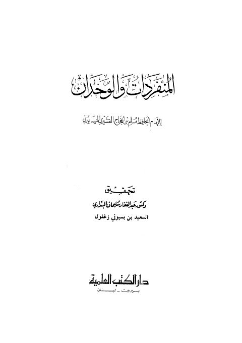
المنفردات والوحدان المنفردات والوحدان مسلم بن الحجاج القشيري النيسابوري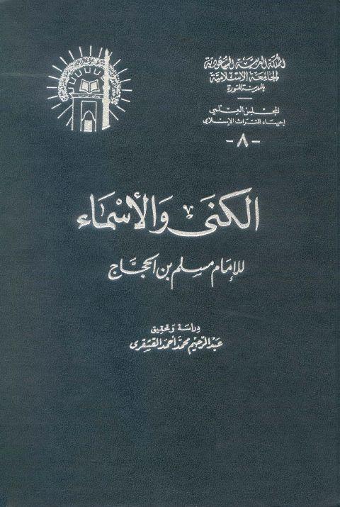
الكنى والأسماء- ت القشقري الكنى والأسماء- ت القشقري مسلم بن الحجاج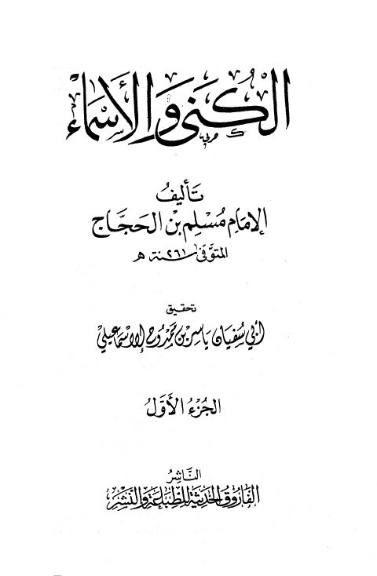
الكنى والأسماء- ت. الإسماعيلي الكنى والأسماء- ت. الإسماعيلي مسلم بن الحجاج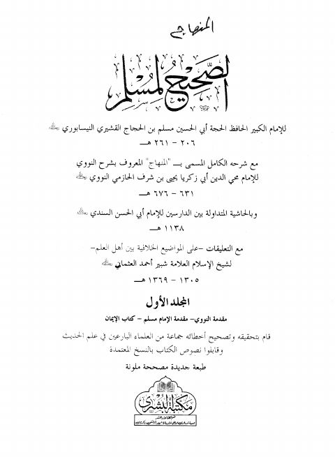
الصحيح لمسلم مع شرح النووي وحاشية السندي- ط البشري الصحيح لمسلم مع شرح النووي وحاشية السندي- ط البشري مسلم بن الحجاج القشيري النيسابوري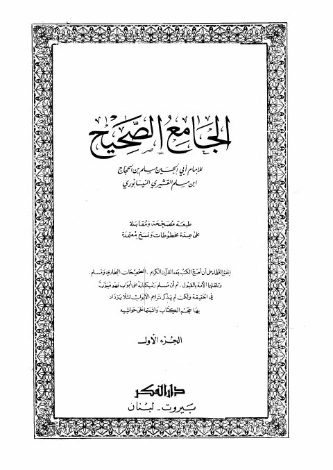
الجامع الصحيح- مسلم الجامع الصحيح- مسلم مسلم بن الحجاج بن مسلم القشيري النيسابوري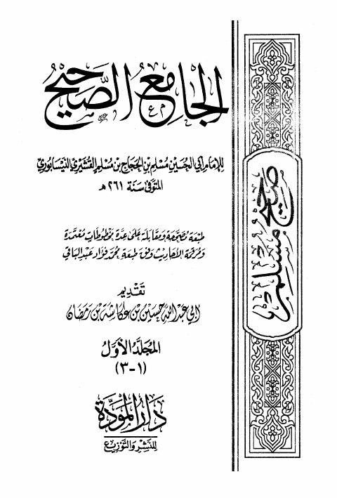
الجامع الصحيح صحيح مسلم- مشكول الجامع الصحيح صحيح مسلم- مشكول مسلم بن الحجاج بن مسلم القشيري النيسابوري صحيح الإمام مسلم المسند الصحيح المختصر من السنن بنقل العدل عن العدل عن رسول الله ﷺ- ملون
صحيح الإمام مسلم المسند الصحيح المختصر من السنن بنقل العدل عن العدل عن رسول الله ﷺ- ملون
مسلم بن الحجاج بن مسلم القشيري النيسابوري
صحيح الإمام مسلم المسند الصحيح المختصر من السنن بنقل العدل عن العدل عن رسول الله ﷺ- ملون
صحيح الإمام مسلم المسند الصحيح المختصر من السنن بنقل العدل عن العدل عن رسول الله ﷺ- ملون
مسلم بن الحجاج بن مسلم القشيري النيسابوري
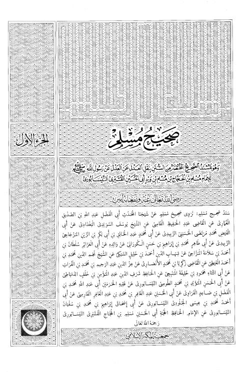
صحيح مسلم المسند الصحيح المختصر من السنن بنقل العدل عن العدل عن رسول الله ﷺ صحيح مسلم المسند الصحيح المختصر من السنن بنقل العدل عن العدل عن رسول الله ﷺ مسلم بن الحجاج بن مسلم القشيري النيسابوري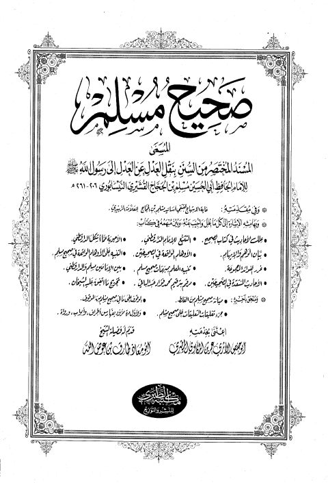
صحيح الإمام مسلم المسند الصحيح المختصر من السنن بنقل العدل عن العدل عن رسول الله ﷺ صحيح الإمام مسلم المسند الصحيح المختصر من السنن بنقل العدل عن العدل عن رسول الله ﷺ مسلم بن الحجاج بن مسلم القشيري النيسابوري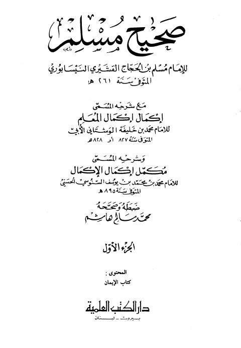
صحيح مسلم مع شرحه المسمى كمال إكمال المعلم وشرحه مكمل إكمال الإكمال صحيح مسلم مع شرحه المسمى كمال إكمال المعلم وشرحه مكمل إكمال الإكمال مسلم بن الحجاج بن مسلم القشيري النيسابوري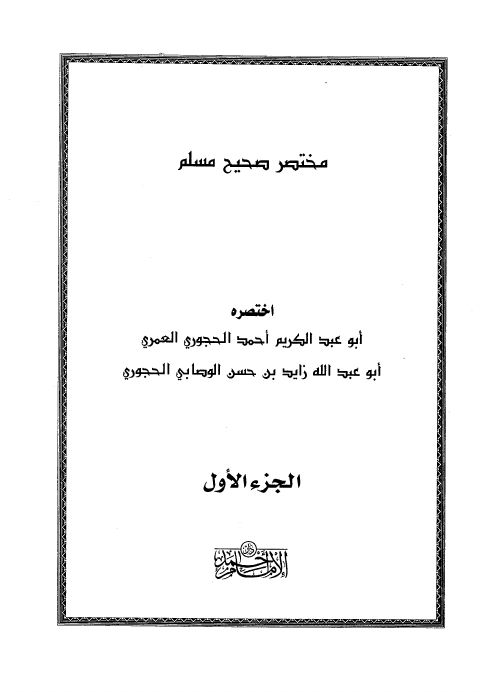
مختصر صحيح مسلم- العموري مختصر صحيح مسلم- العموري مسلم بن الحجاج بن مسلم القشيري النيسابوري صحيح مسلم وهو المسند الصحيح
صحيح مسلم وهو المسند الصحيح
مسلم بن الحجاج بن مسلم القشيري النيسابوري
صحيح مسلم وهو المسند الصحيح
صحيح مسلم وهو المسند الصحيح
مسلم بن الحجاج بن مسلم القشيري النيسابوري
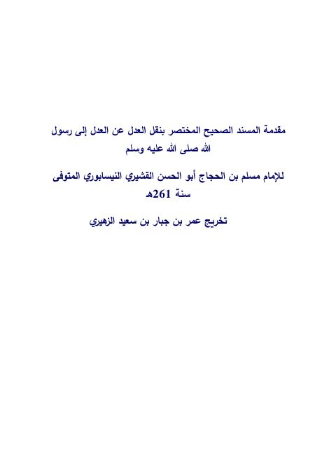
مقدمة المسند الصحيح المختصر بنقل العدل عن العدل إلى رسول ﷺ مقدمة المسند الصحيح المختصر بنقل العدل عن العدل إلى رسول ﷺ مسلم بن الحجاج القشيري النيسابوري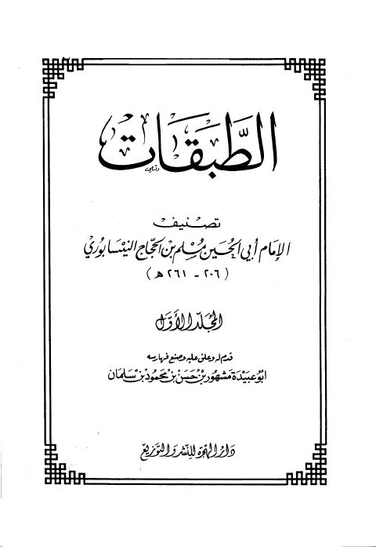
الطبقات- ت مشهور الطبقات- ت مشهور مسلم بن الحجاج بن مسلم القشيري النيسابوري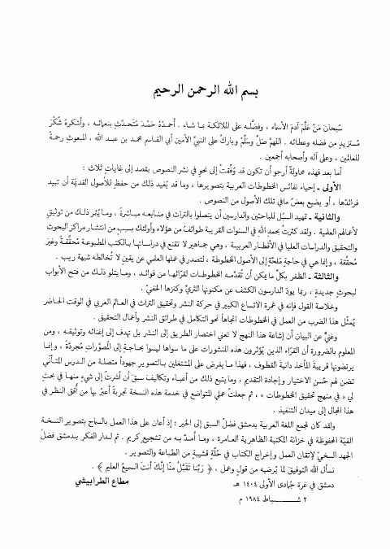
الكنى والأسماء النسخة المخطوطة- ت الطرابيشي الكنى والأسماء النسخة المخطوطة- ت الطرابيشي مسلم بن الحجاج بن مسلم القشيري النيسابوري منة المنعم في شرح صحيح مسلم المسند الصحيح المختصر من السنن بنقل العدل عن العدل عن رسول الله ﷺ- أجزاء
منة المنعم في شرح صحيح مسلم المسند الصحيح المختصر من السنن بنقل العدل عن العدل عن رسول الله ﷺ- أجزاء
مسلم بن الحجاج بن مسلم القشيري النيسابوري
منة المنعم في شرح صحيح مسلم المسند الصحيح المختصر من السنن بنقل العدل عن العدل عن رسول الله ﷺ- أجزاء
منة المنعم في شرح صحيح مسلم المسند الصحيح المختصر من السنن بنقل العدل عن العدل عن رسول الله ﷺ- أجزاء
مسلم بن الحجاج بن مسلم القشيري النيسابوري
 الجامع الصحيح طبعة مصححة
الجامع الصحيح طبعة مصححة
مسلم بن الحجاج بن مسلم القشيري النيسابوري
الجامع الصحيح طبعة مصححة
الجامع الصحيح طبعة مصححة
مسلم بن الحجاج بن مسلم القشيري النيسابوري
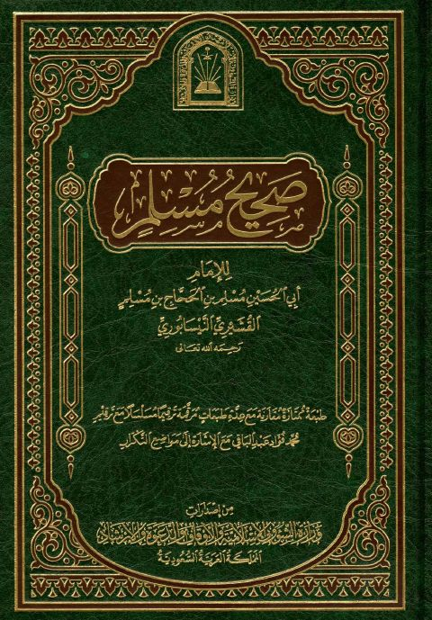
صحيح مسلم صحيح مسلم مسلم بن الحجاج بن مسلم القشيري النيسابوري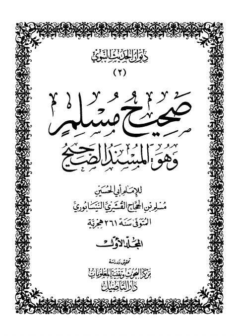
صحيح مسلم وهو المسند الصحيح صحيح مسلم وهو المسند الصحيح مسلم بن الحجاج بن مسلم القشيري النيسابوري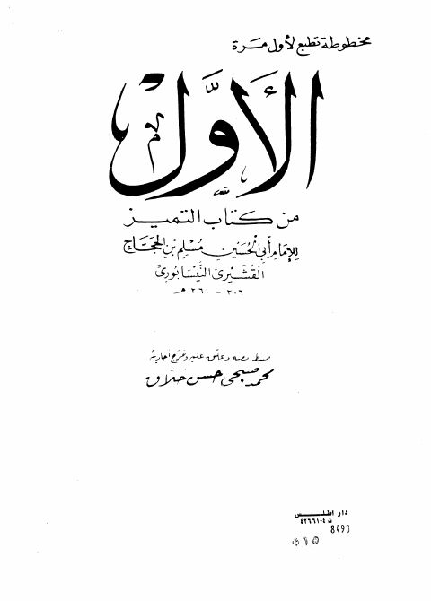
الأول من كتاب التمييز للإمام مسلم الأول من كتاب التمييز للإمام مسلم مسلم بن الحجاج القشيري النيسابوري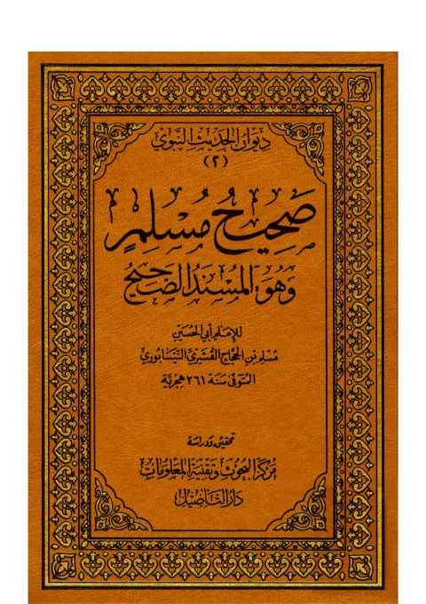
كتاب الأوقاف والوصايا من صحيح مسلم كتاب الأوقاف والوصايا من صحيح مسلم مسلم بن الحجاج بن مسلم القشيري النيسابوري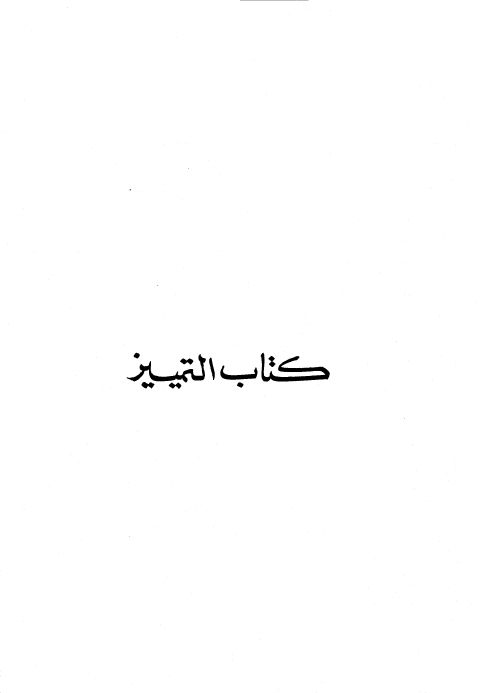
كتاب التمييز كتاب التمييز مسلم بن الحجاج القشيري النيسابوري منة المنعم في شرح صحيح مسلم المسند الصحيح المختصر من السنن بنقل العدل عن العدل عن رسول الله ﷺ- مدمجة
منة المنعم في شرح صحيح مسلم المسند الصحيح المختصر من السنن بنقل العدل عن العدل عن رسول الله ﷺ- مدمجة
مسلم بن الحجاج بن مسلم القشيري النيسابوري
منة المنعم في شرح صحيح مسلم المسند الصحيح المختصر من السنن بنقل العدل عن العدل عن رسول الله ﷺ- مدمجة
منة المنعم في شرح صحيح مسلم المسند الصحيح المختصر من السنن بنقل العدل عن العدل عن رسول الله ﷺ- مدمجة
مسلم بن الحجاج بن مسلم القشيري النيسابوري
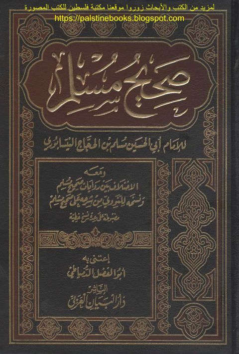
صحيح مسلم ومعه الاختلاف بين روايات مسلم للنووي من شرحه على صحيح مسلم صحيح مسلم ومعه الاختلاف بين روايات مسلم للنووي من شرحه على صحيح مسلم مسلم بن الحجاج بن مسلم القشيري النيسابوري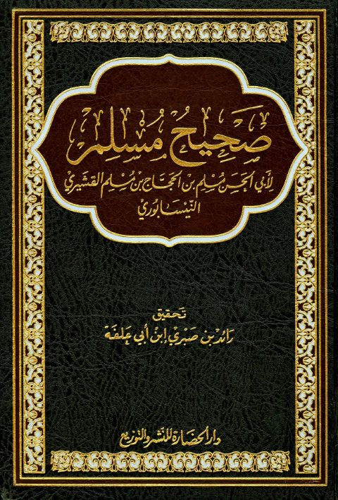
صحيح مسلم- ت ابن أبي علفة صحيح مسلم- ت ابن أبي علفة مسلم بن الحجاج بن مسلم القشيري النيسابوري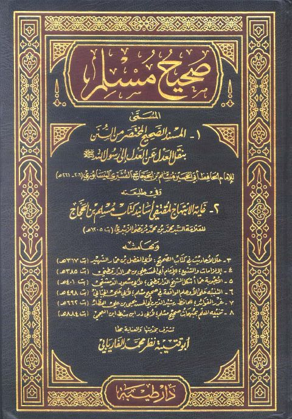
صحيح مسلم المسمى المسند الصحيح المختصر من السنن وفي طليعته غاية الابتهاج للزبيدي وبهامشه 7 كتب صحيح مسلم المسمى المسند الصحيح المختصر من السنن وفي طليعته غاية الابتهاج للزبيدي وبهامشه 7 كتب مسلم بن الحجاج بن مسلم القشيري النيسابوري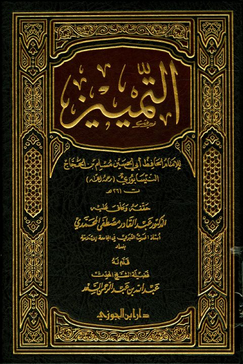
التمييز التمييز مسلم بن الحجاج النيسابوري منبه النعم في شرح صحيح مسلم
منبه النعم في شرح صحيح مسلم
مسلم بن الحجاج القشيري النيسابوري
منبه النعم في شرح صحيح مسلم
منبه النعم في شرح صحيح مسلم
مسلم بن الحجاج القشيري النيسابوري
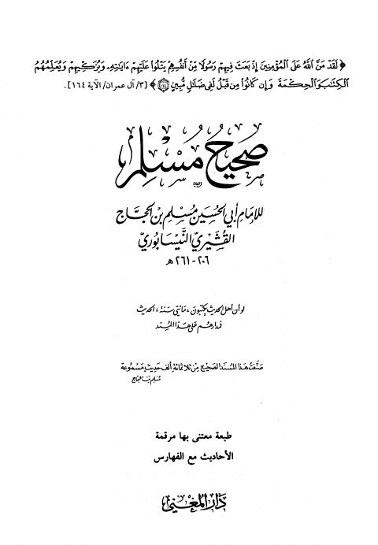
صحيح مسلم- ط. دار المغني صحيح مسلم- ط. دار المغني مسلم بن الحجاج بن مسلم القشيري النيسابوري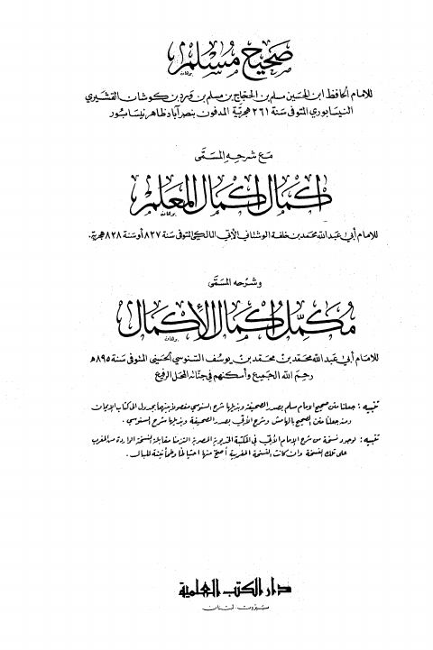
صحيح مسلم مع شرحه المسمى إكمال إكمال المعلم وشرحه مكمل إكمال الإكمال صحيح مسلم مع شرحه المسمى إكمال إكمال المعلم وشرحه مكمل إكمال الإكمال مسلم بن الحجاج بن مسلم القشيري النيسابوري صحيح مسلم -ط. العامرة- ت. ذهني
صحيح مسلم -ط. العامرة- ت. ذهني
مسلم بن الحجاج بن مسلم القشيري النيسابوري
صحيح مسلم -ط. العامرة- ت. ذهني
صحيح مسلم -ط. العامرة- ت. ذهني
مسلم بن الحجاج بن مسلم القشيري النيسابوري
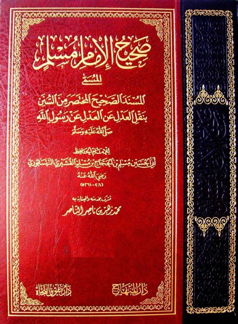
صحيح الإمام مسلم المسند الصحيح المختصر من السنن بنقل العدل عن العدل عن رسول الله ﷺ صحيح الإمام مسلم المسند الصحيح المختصر من السنن بنقل العدل عن العدل عن رسول الله ﷺ مسلم بن الحجاج بن مسلم القشيري النيسابوري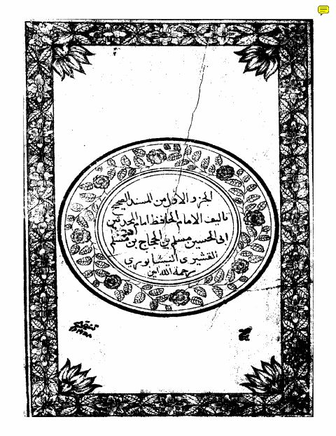
صحيح مسلم- ط. الهند صحيح مسلم- ط. الهند مسلم بن الحجاج بن مسلم القشيري النيسابوري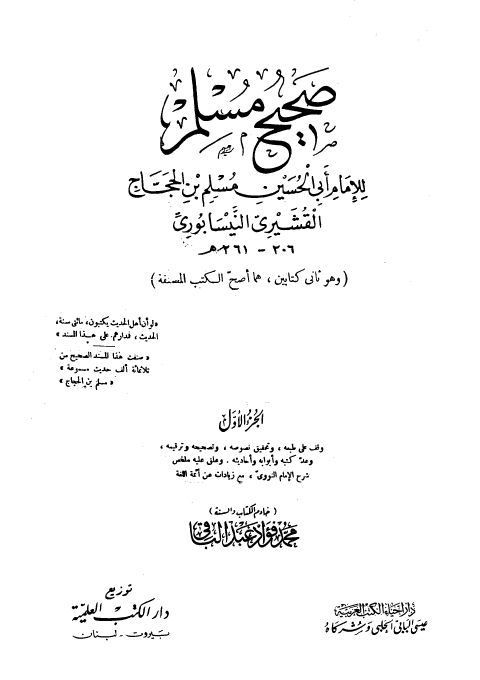
صحيح مسلم -ت. محمد فؤاد عبد الباقي- طبعة الحلبي صحيح مسلم -ت. محمد فؤاد عبد الباقي- طبعة الحلبي مسلم بن الحجاج بن مسلم القشيري النيسابوري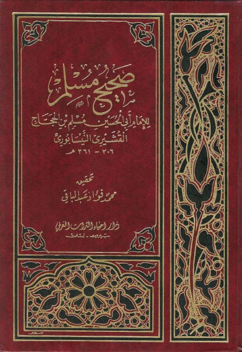
صحيح مسلم- ت. محمد فؤاد عبد الباقي صحيح مسلم- ت. محمد فؤاد عبد الباقي مسلم بن الحجاج بن مسلم القشيري النيسابوري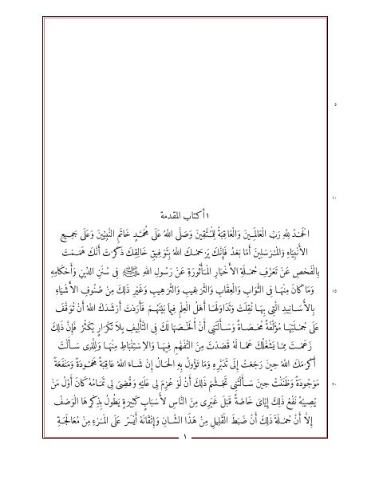
صحيح مسلم- ط. جمعية المكنز الإسلامي صحيح مسلم- ط. جمعية المكنز الإسلامي مسلم بن الحجاج بن مسلم القشيري النيسابوري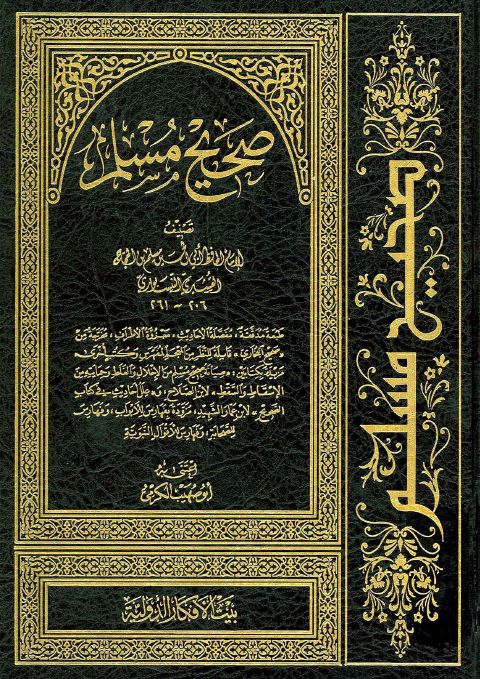
صحيح مسلم- ط. بيت الأفكار الدولية صحيح مسلم- ط. بيت الأفكار الدولية مسلم بن الحجاج بن مسلم القشيري النيسابوري صحيح مسلم ط العامرة تركيا، الجامع الصحيح
صحيح مسلم ط العامرة تركيا، الجامع الصحيح
مسلم بن الحجاج بن مسلم القشيري النيسابوري
صحيح مسلم ط العامرة تركيا، الجامع الصحيح
صحيح مسلم ط العامرة تركيا، الجامع الصحيح
مسلم بن الحجاج بن مسلم القشيري النيسابوري
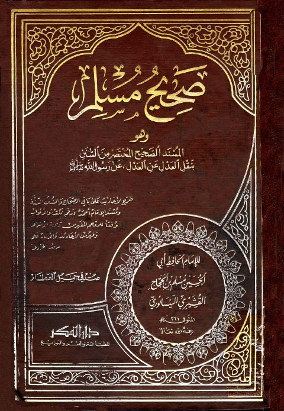
صحيح مسلم وهو المسند الصحيح المختصر من السنن- ط. دار الفكر صحيح مسلم وهو المسند الصحيح المختصر من السنن- ط. دار الفكر مسلم بن الحجاج بن مسلم القشيري النيسابوري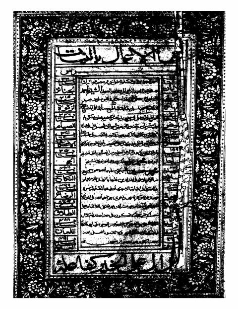
صحيح مسلم مع شرح النووي- طبعة دهلي 1793هـ صحيح مسلم مع شرح النووي- طبعة دهلي 1793هـ مسلم بن الحجاج بن مسلم القشيري النيسابوري صحيح الإمام مسلم المسند الصحيح المختصر من السنن بنقل العدل عن العدل عن رسول الله ﷺ
صحيح الإمام مسلم المسند الصحيح المختصر من السنن بنقل العدل عن العدل عن رسول الله ﷺ
مسلم بن الحجاج بن مسلم القشيري النيسابوري
صحيح الإمام مسلم المسند الصحيح المختصر من السنن بنقل العدل عن العدل عن رسول الله ﷺ
صحيح الإمام مسلم المسند الصحيح المختصر من السنن بنقل العدل عن العدل عن رسول الله ﷺ
مسلم بن الحجاج بن مسلم القشيري النيسابوري
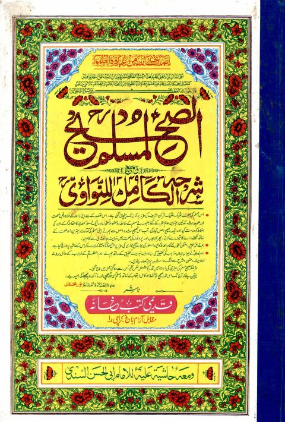
الصحيح لمسلم مع شرح النووي وحاشية السندي- قديمي كتب خانة الصحيح لمسلم مع شرح النووي وحاشية السندي- قديمي كتب خانة مسلم بن الحجاج القشيري النيسابوري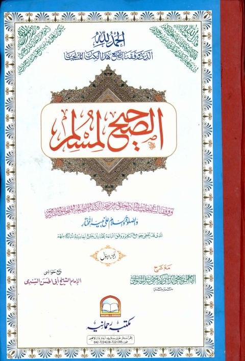
الصحيح لمسلم مع شرح النووي وحاشية السندي- مكتبة رحمانية الصحيح لمسلم مع شرح النووي وحاشية السندي- مكتبة رحمانية مسلم بن الحجاج القشيري النيسابوري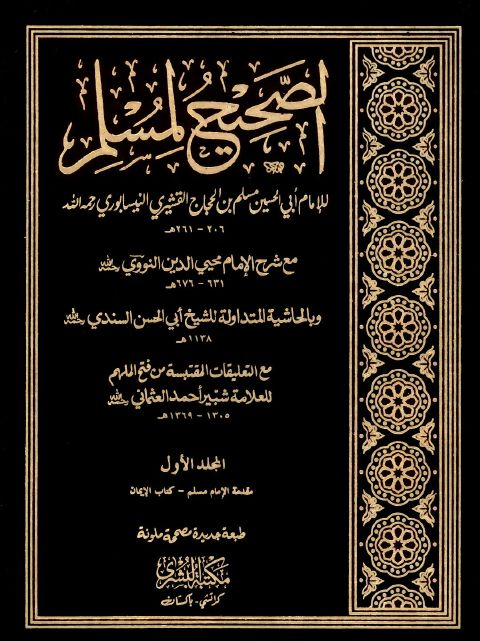
صحيح مسلم مع شرحه المنهاج للنووي- ط كراتشي ملونة صحيح مسلم مع شرحه المنهاج للنووي- ط كراتشي ملونة مسلم بن الحجاج القشيري النيسابوري • النووي • السندي • شبير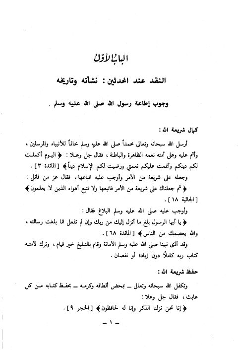
التمييز التمييز مسلم بن الحجاج النيسابوري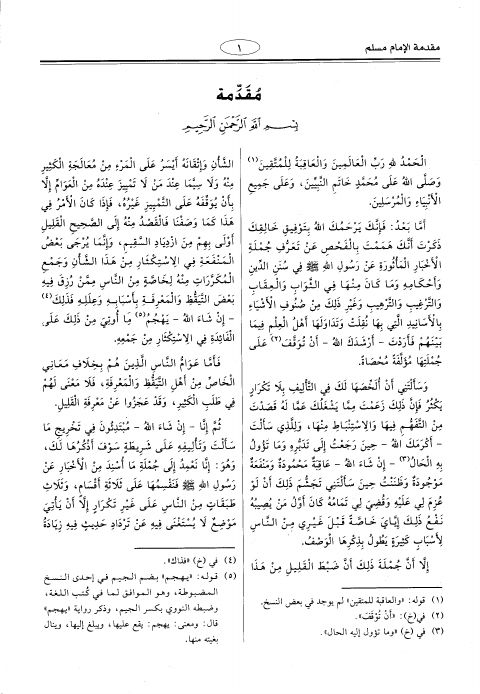
صحيح مسلم -ت الفريابي- نسخة مصغرة صحيح مسلم -ت الفريابي- نسخة مصغرة مسلم بن الحجاج القشيري النيسابوري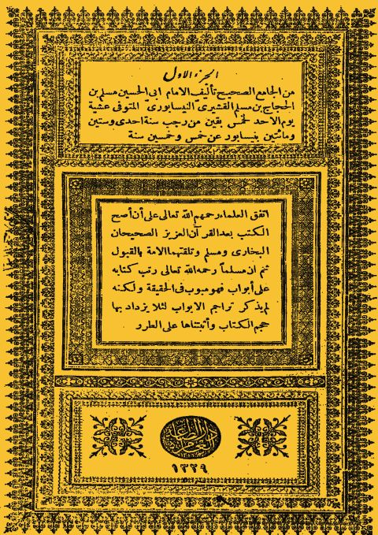
صحيح مسلم -ط. العامرة- طبعة أخرى صحيح مسلم -ط. العامرة- طبعة أخرى مسلم بن الحجاج بن مسلم القشيري النيسابوري صحيح مسلم- دار السلام
صحيح مسلم- دار السلام
مسلم بن الحجاج بن مسلم القشيري النيسابوري
صحيح مسلم- دار السلام
صحيح مسلم- دار السلام
مسلم بن الحجاج بن مسلم القشيري النيسابوري
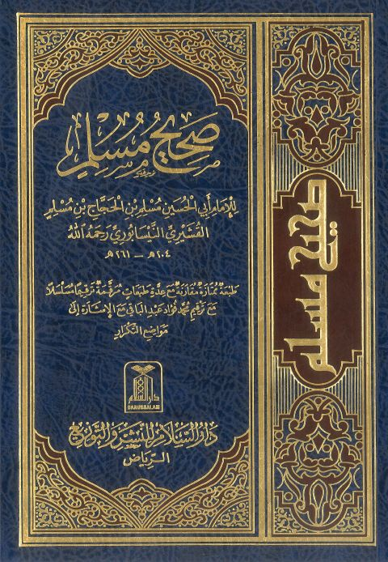
صحيح مسلم صحيح مسلم مسلم بن الحجاج القشيري النيسابوري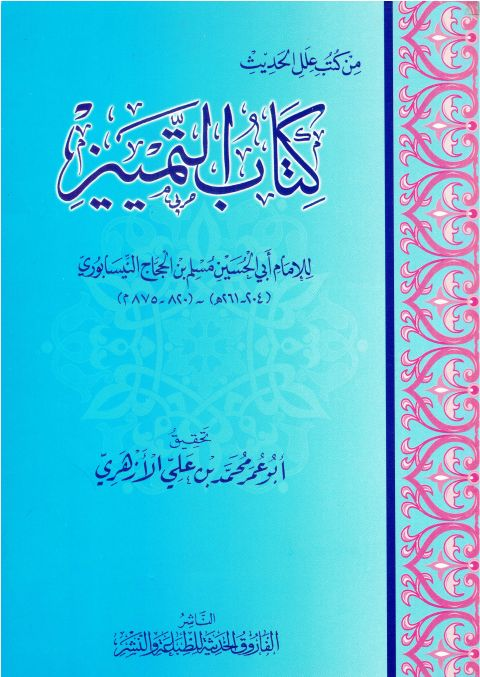
كتاب التمييز كتاب التمييز مسلم بن الحجاج القشيري النيسابوري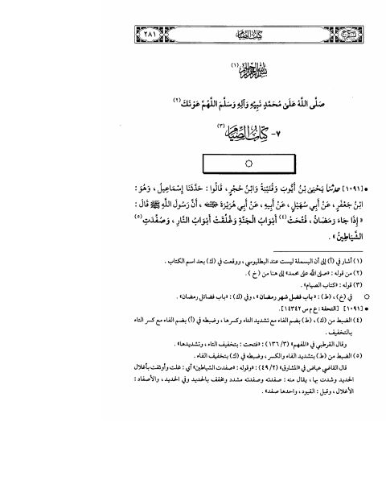
كتاب الصيام من صحيح مسلم كتاب الصيام من صحيح مسلم مسلم بن الحجاج كتاب العلم من كتب الستة وابن حيان والدارمي وابن شيبة والمستدرك
كتاب العلم من كتب الستة وابن حيان والدارمي وابن شيبة والمستدرك
أبو داوود • النيسابوري • البخاري • النسائي • ابن حبان • ابن ماجه • الترمذي
كتاب العلم من كتب الستة وابن حيان والدارمي وابن شيبة والمستدرك
كتاب العلم من كتب الستة وابن حيان والدارمي وابن شيبة والمستدرك
أبو داوود • النيسابوري • البخاري • النسائي • ابن حبان • ابن ماجه • الترمذي
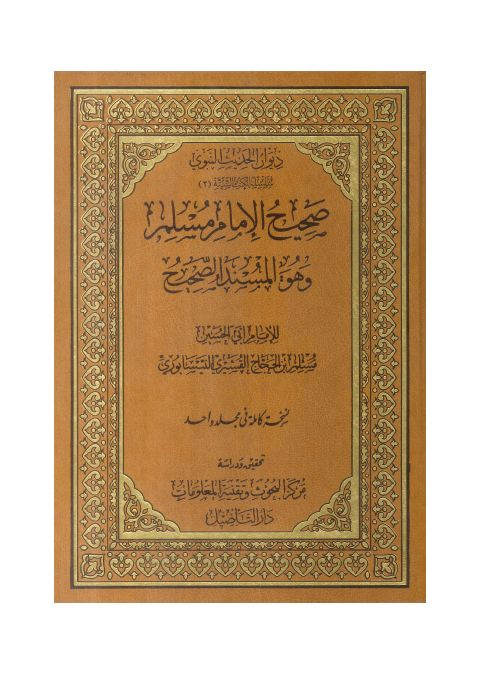
صحيح الإمام مسلم وهو المسند الصحيح- نسخة كاملة صحيح الإمام مسلم وهو المسند الصحيح- نسخة كاملة مسلم بن الحجاج القشيري النيسابوري صحيح مسلم- مصححة
صحيح مسلم- مصححة
مسلم بن الحجاج القشيري
صحيح مسلم- مصححة
صحيح مسلم- مصححة
مسلم بن الحجاج القشيري
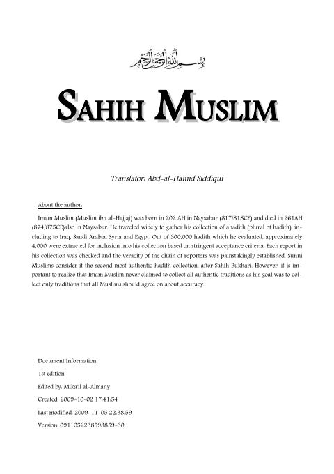
صحيح مسلم بالإنجليزية Sahih Muslim صحيح مسلم بالإنجليزية Sahih Muslim مسلم بن الحجاج القشيري النيسابوري